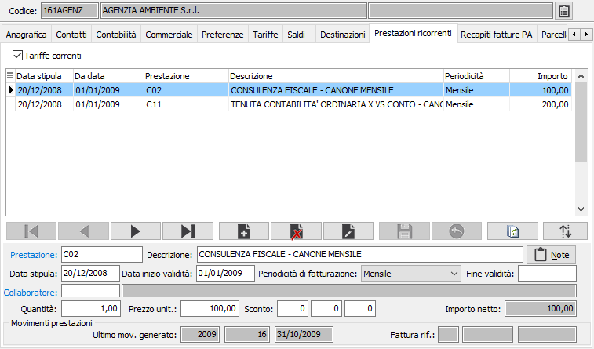

Prestazioni ricorrenti
La linguetta contiene informazioni relative alle eventuali prestazioni che interessano il cliente attivo e che hanno una periodicità fissa di fatturazione; l'inserimento dei dati in questa sezione consente di generare in automatico i movimenti prestazioni relativi al cliente per successiva fatturazione.
La spunta su Tariffe correnti consente di visualizzare solo le prestazioni attive alla data di sistema, togliendo la spunta saranno visualizzate tutte le prestazioni inserite.

PRESTAZIONE: codice alfanumerico presente in anagrafica prestazioni per indicare la prestazione da addebitare. A conferma, vengono visualizzati la descrizione (modificabile), nonché il prezzo unitario della prestazione desunto dalle tariffe speciali per cliente, dal listino oppure dall’anagrafica prestazione. Sul campo sono attive le funzioni di ricerca (F9) ed accesso rapido (CTRL+W) sulla tabella stessa.
NOTE: bottone che abilita un ulteriore specifica di annotazioni per il rigo corrente.
DATA STIPULA: indica la data in cui è stato concordato con il cliente l'addebito.
DATA INIZIO validità: Indica la data (obbligatoria) dalla quale deve iniziare l'addebito periodico della prestazione attiva. Il valore di questo campo, attualizzato in relazione alla "Periodicità di fatturazione", viene esaminato dal programma "Generazione addebiti di fatturazione" per generare il correlato movimento prestazione.
PERIODICITÀ DI FATTURAZIONE: definisce la periodicità di fatturazione, significativa ai fini della generazione del movimento prestazione. Valori ammessi:
Mensile
Bimestrale
Trimestrale
Quadrimestrale
Semestrale
Annuale
Biennale
Triennale
Quadriennale
Quinquennale
Data fine validità: è prevista la possibilità di indicare una data di fine validità della prestazione già in fase di inserimento prestazione.
Collaboratore: se gestiti i collaboratori è possibile indicare il soggetto che si occupa dell’attività. In fase di generazione movimenti da prestazione ricorrente il collaboratore indicato viene riportato sul movimento.
Quantità: campo numerico obbligatorio per inserire la quantità di prestazione.
PREZZO UNITARIO: campo numerico per inserire il prezzo. Per le prestazioni codificate viene presentato, nell’ordine, il prezzo presente nell'eventuale listino speciale, oppure il prezzo del listino memorizzato sul documento, oppure il prezzo di vendita presente in anagrafica prestazione. Il prezzo proposto può essere modificato dall’utente.